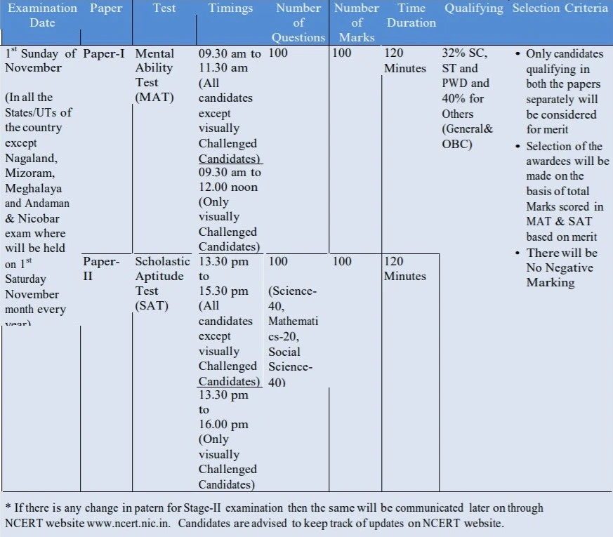
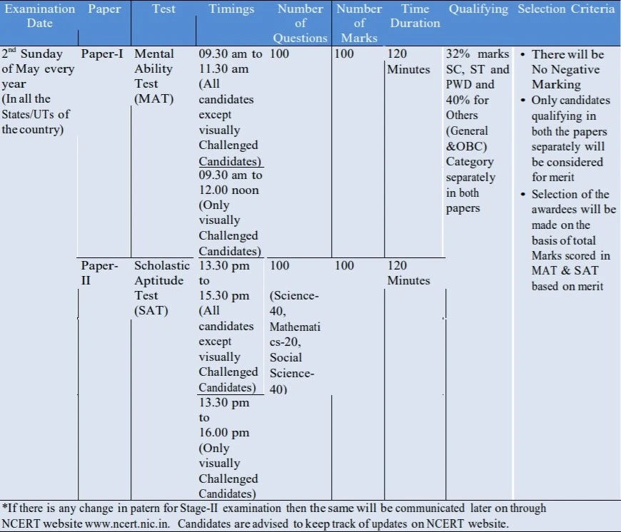

	<div class="site-section bg-light" id="Key-Points">
      <div class="container">
        <div class="row mb-5">
          <div class="col-md-7">
            <h2>Natinal Talent Search Examination (NTSE)</h2>
            <p class="heading"></p>
          </div>
        </div>
		
		
		<style>
          table, th, td {
          border: 1px solid black;
          border-collapse: collapse;}
        </style>
		
		
		<div class="row">
          <div class="col-lg-8 mb-5 mb-lg-0">
            <div class="row mb-5">
              <div class="col-12">
			    <h3> Introduction</h3>
                <p> The National Talent Search Examination, also known as NTSE, is one of the most competitive and prestigious scholarship programs in India. NTSE exam is conducted every year for class 10 students, by the National Council of Educational Research and Training (NCERT). The NTS exam is a national-level scholarship exam in India conducted to identify and recognize students with high intellect and academic talent.<br>
				Every year, around 5 lakh students appear for this scholarship exam every year for 2000 scholarships (with reservation of 15 percent for SC, 7.5 percent for ST and 27 percent for other backward classes and 4 percent for group of students with benchmark disabilities). The scholarship, under NTSE, is awarded to the candidates for pursuing courses in science and social science up to doctoral level and in professional courses like medicine and engineering up to second-degree level subject to the fulfillment of some conditions (mentioned further in this post). The selected candidates are provided with monetary benefits till their PhD, along with some other perks.</p>
				

               
                <h3><br>SELECTION PROCEDURE</h3>
				<p>The Exam comprises two-stage selection process. <br>
                   STAGE 1: STATE LEVEL EXAMINATION: conducted by individual State/UT <br>
                   STAGE 2: NATIONAL LEVEL EXAMINATION: It is carried out by the NCERT. <br></p> 
				<h4>STAGE 1: STATE LEVEL EXAMINATION </h4>
				<p>Each State/UT conducts its own examination. They have the autonomy to lay down their own norms for the purpose of determining the eligibility of the candidates. This examination is primarily used to recommend a given number of candidates for the second level test to be conducted by the NCERT. Roughly 8500 students are selected in this round. Exact state wise seats for NTSE 2019-20 can be found <a href="NTSE_quota.html">here</a>.</p>
				
				
				<table style="width:100%">				
				
                   <tr>
                     <th>Eligibility</th>
                     <td>1. All students studying in Class X in any recognized school will be eligible to appear at the State Level Examination from the State in which the school is located. <br>
                         2. Students registered under Open and Distance Learning (ODL) are also eligible for scholarship provided the students are below the age of 18 years (as on 1st July of that particular year) and the student is not employed and is appearing in class X for the first time
                     </td>		 
                   </tr>
				   <tr>
                     <th>How to apply</th>
                     <td>The students studying in Class X in the country ought to be on the lookout for any advertisement in the newspapers or circulars in the school by the respective Government of their State/UT for the above said examination and act as per the requirement given in the State advertisement/circular.The filled in application by the student be submitted to the State Liaison Officer duly signed by the Principal of the school before the due date as advertised/circulated by each concerned State/UT.</td>
                   </tr>
				   <tr>
				     <td>Medium of Examination</td>
					 <td>Shall be as announced by the State/UT (Mostly is English and regional language)</td>
				   </tr>
				   <tr>
				     <td>Fee</td>
				     <td>State may impose any fee for examination and/or for an application form.</td>
				   </tr>
				   <tr>
				     <th>Exam Pattern</th>
				     <td>Part-I Mental Ability Test (MAT) and PartII Scholastic Aptitude Test (SAT). Detailed description given below</td>
				   </tr>
				   <tr>
				     <th>Results</th>
				     <td>The State/Union Territory will prepare a merit list of the candidates ensuring the minimum qualifying marks(40% for Gen/OBC and 32%for SC/ST/PwD) in both the tests separately. The result  is declared in months of January/ February by the States/UTs. 
				   The marks of the State level Examination are not added to the National Level Examination for award of scholarship.</td>
				   </tr>
				</table>
				
               <p> <br>The Detailed scheme of marking is given below:</p>
               
			   
			   
			   <h4><br><br>STAGE 2: NATIONAL LEVEL EXAMINATION </h4>
				
				
				<table style="width:100%">				
				
                   <tr>
                     <th>Eligibility</th>
                     <td>1. Candidates studying in India: Only the candidates selected by the States/UTs on the basis of their screening examination shall be eligible to appear in the National level examination<br>
                         2. Candidates studying Abroad:Students of Indian nationality studying abroad can appear for NTSE Stage 2 directly. But they must have secured 60 percent marks in the last annual examination conducted by the school</td>		 
                   </tr>
				   <tr>
                     <th>Allotment of E-Admit Cards</th>
                     <td>The NCERT shall upload the E-Admit Cards for the second level examination on its website. The admission letter shall have all the information about the venue, the roll number, the date and time of the test. Candidates can download their E-Admit cards themselves before 21 days of examination. </tr>
				   <tr>
				     <td>Medium of Examination</td>
					 <td>The tests will be available in the following languages: Asamiya, Bangla, English, Gujarati, Hindi, Kannada, Marathi, Malayalam, Odia, Punjabi, Tamil, Telugu and Urdu. </td>
				   </tr>
				   <tr>
				     <td>Fee</td>
				     <td>No Additional Fees will be Charged</td>
				   </tr>
				   <tr>
				     <th>Exam Pattern</th>
				     <td>Part-I Mental Ability Test (MAT) and PartII Scholastic Aptitude Test (SAT). Detailed description given below</td>
				   </tr>
				   <tr>
				     <th>Results</th>
				     <td>The final award shall be declared on the basis of combined scores of MAT and SAT. Only the selected candidates shall be informed by registered letter and through NCERT <a href="www.ncert.nic.in.">website</a>. Marks obtained by the candidates in written examination will be revealed to all the candidates individually through NCERT website.</td>
				   </tr>
				</table>
				
<p> <br>The Detailed scheme of marking is given below:</p>


 <h3><br><br>Rates of Scholarship</h3>
				<p> The Rates of scholarships are given as under:</p>
				
				<table style="width:100%">	
				  <tr>
                     <th>S. No.</th>
                     <th>Stage</th>
					 <th>Rate of Scholarship</th>			 
                  </tr>
				  <tr>
                     <th>1.</th>
                     <th>Higher Secondary level</th>
					 <th>Rs. 1250/- p.m.</th>			 
                  </tr>
				  <tr>
                     <th>2. </th>
                     <th>Graduate and Post Graduate</th> 
					 <th>Rs. 2000/- p.m</th>			 
                  </tr>
				  <tr>
                     <th>3. </th>
                     <th>For Ph.D. degree (four years)</th> 
					 <th>As per UGC norms</th>			 
                  </tr>
				</table>


              <p><br> <br>We hope this detailed article on NTSE helps you. If you have any query regarding NTSE exam in general, feel free to ping us on Messenger or in Contact section. We will get back to you as soon as possible </p>
			  </div>
            </div>
            

            
          </div>
          <div class="col-lg-3 ml-auto">
           
            <div class="row mb-5">
              <div class="col-md-12">
                <h3>Also Read</h3>
              </div>
              <div class="col-md-12">
                <ul class="list-unstyled">
                  <li><a href="NTSE-Stage1.html">How to Start Preparing for NTSE</a></li>
                  <li><a href="NTSE_quota.html">State Wise Quota of NTSE</a></li>
                  <li><a href="NTSE-Stage2.html">How to Prepare for NTSE Stage 2</a></li>
                  <li><a href="Contact.html" >Contact Us</a></li>
                </ul>
              </div>
              
            </div>
            
          </div>
          
            


          </div>
          
        </div>

        </div>
      </div>
    </div>
